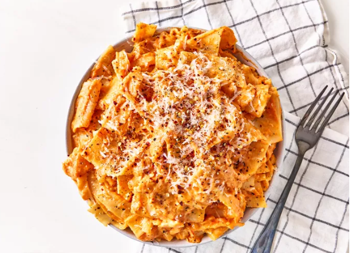

This is The Cheesy Lasagna Pasta 🍝😋😋😋

Description
Cheesy Lasagna Pasta is a quick and delicious twist on the classic lasagna.
It combines tender lasagna noodles with rich tomato sauce and gooey melted cheese,
all cooked together in one pot for a simple and satisfying comfort meal.
Perfect for busy weeknights or when you crave something warm and cheesy!
Needed
- 8 ounces lasagna noodles, broken in half
- 1 (24-ounce) jar tomato sauce
- 8 ounces shredded whole milk mozzarella cheese
Steps
- In a large pot, combine the broken lasagna noodles and tomato sauce.
- Add enough water to cover the noodles, about 2 cups.
- Bring to a boil over medium-high heat, then reduce to a simmer.
- Cover and cook for about 15-20 minutes, stirring occasionally, until the noodles are tender.
- Remove from heat and stir in the shredded mozzarella cheese until melted and well combined.
- Serve hot and enjoy your cheesy lasagna pasta!